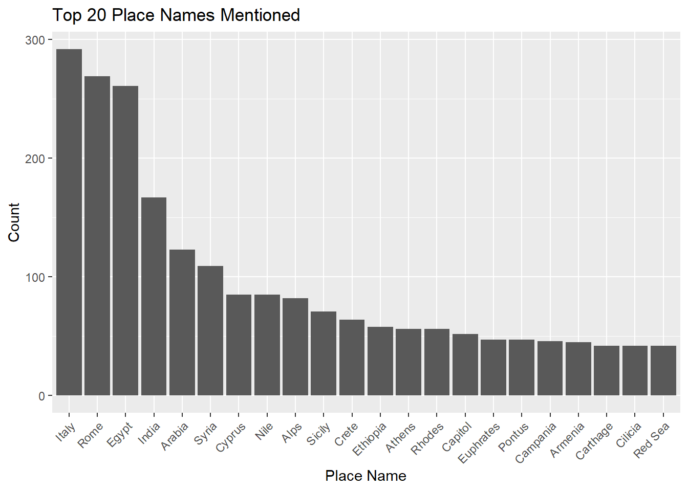

Keyword and Collocation analysis on India-related text of Natural History
1. Research Question
Natural History by Pliny the Elder is considered the very first encyclopedia in modern history. It not only showcased the actual merchant exchange of the Roman Empire, but also manifested the spatial imagination of Pliny the Elder and the referenced scholarships of that time.
data <-read.csv("geotext_whole.csv")summary_data <- data %>%group_by(ToposText_ID, Place_Name, Lat, Long) %>%summarise(Count =n()) %>%arrange(desc(Count)) %>%ungroup()top_20_summary_data <- summary_data %>%top_n(20, Count) %>%ungroup() %>%print()
ggplot(top_20_summary_data, aes(x =reorder(Place_Name, -Count), y = Count)) +geom_bar(stat ="identity") +labs(x ="Place Name", y ="Count") +ggtitle("Top 20 Place Names Mentioned") +theme(axis.text.x =element_text(angle =45, hjust =1))

m <-leaflet() %>%addTiles() %>%addCircleMarkers(data = top_20_summary_data,lat =~Lat,lng =~Long,radius =sqrt(top_20_summary_data$Count) *0.8, # Adjust the scaling factor as neededcolor ="blue",fill =TRUE,fillOpacity =0.6,popup =paste("Place Name:", top_20_summary_data$Place_Name, "<br>","Count:", top_20_summary_data$Count) ) %>%print()
2. Corpus Description
As there is a digitized and name entities annotated full text available on ToposText project, I scraped the full text and exported them in .txt as a corpus, and also exported those with geographical location annotations, which considered as geographically related texts as a sub corpus.
top_scores_kw %>%# also valid for top_scores_collocas_tibble() %>%select(type, a, PMI, G_signed) %>%# select 4 columnsarrange(desc(PMI)) %>%# sort by PMI (descending) head(30) %>%# select top 30 rowskbl(col.names =c("Type", "Frequency", "PMI", r"(Signed $G^2$)")) %>%kable_minimal() %>%scroll_box(height ="400px")
Type
Frequency
PMI
Signed $G^2$
india
169
3.424756
584.908519
ganges
22
3.424756
76.061287
beryls
13
3.424756
44.942393
ichthyophagi
7
3.424756
24.198705
megasthenes
7
3.424756
24.198705
obsidian
6
3.424756
20.741598
bdellium
5
3.424756
17.284540
agates
4
3.424756
13.827533
callaina
4
3.424756
13.827533
condensation
4
3.424756
13.827533
gerra
4
3.424756
13.827533
jomanes
4
3.424756
13.827533
nonius
4
3.424756
13.827533
prasii
4
3.424756
13.827533
alia
3
3.424756
10.370575
carnelian
3
3.424756
10.370575
cophes
3
3.424756
10.370575
hypasis
3
3.424756
10.370575
merchandize
3
3.424756
10.370575
peppertree
3
3.424756
10.370575
sacae
3
3.424756
10.370575
sandastros
3
3.424756
10.370575
thornbush
3
3.424756
10.370575
agate
5
3.287252
16.084626
amethysts
5
3.287252
16.084626
mart
5
3.287252
16.084626
aloe
4
3.254831
12.647927
arii
4
3.254831
12.647927
exudation
4
3.254831
12.647927
expeditions
3
3.202364
9.222978
5. Collocation Analysis on “India” in the whole corpus
coocs <- fnames_wholetext %>%surf_cooc("(?xi) ^ india $", re_token_splitter = r"--[(?xi) \s+ ]--", # whitespace as token splitterre_token_transf_in ="[[:punct:]]", # Match punctuation markstoken_transf_out ="")coocs$target_freqlist
Frequency list (types in list: 376, tokens in list: 1013)
rank type abs_freq nrm_freq
---- ------ -------- --------
1 the 80 789.733
2 of 71 700.888
3 in 60 592.300
4 is 44 434.353
5 and 40 394.867
6 from 26 256.663
7 a 25 246.792
8 to 25 246.792
9 are 19 187.562
10 that 19 187.562
11 also 14 138.203
12 it 11 108.588
13 there 10 98.717
14 arabia 9 88.845
15 for 9 88.845
16 found 9 88.845
17 where 8 78.973
18 which 8 78.973
19 those 7 69.102
20 as 6 59.230
...
coocs$ref_freqlist
Frequency list (types in list: 31204, tokens in list: 703969)
rank type abs_freq nrm_freq
---- ----- -------- --------
1 the 56925 808.629
2 of 30659 435.516
3 and 24632 349.902
4 in 17151 243.633
5 a 17119 243.178
6 is 16537 234.911
7 to 14328 203.532
8 it 11969 170.022
9 that 9925 140.986
10 for 7870 111.795
11 with 7698 109.351
12 by 7043 100.047
13 are 6760 96.027
14 as 6141 87.234
15 from 4892 69.492
16 which 4806 68.270
17 also 4551 64.648
18 on 4403 62.545
19 they 4208 59.775
20 this 3991 56.693
...